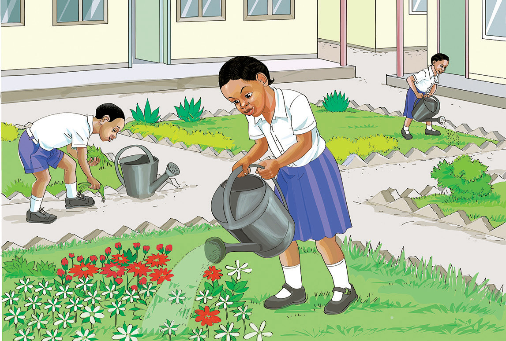

Zoezi la 4
Soma sentensi hizi kwa haraka na kwa usahihi.
Juma ni mwanafunzi. Anasoma Kundirika la Kwanza Mwaka wa Kwanza. Anasoma shule ya Msingi Mavuno. Shule hiyo iko Mtaa wa Kichangani.
Soma habari hii kwa haraka na kwa usahihi.
Bustani ya maua
Tunu anasoma Kundirika la Kwanza Mwaka wa Kwanza. Shule yao ina bustani ya maua. Bustani ina maua meupe, mekundu na ya kijani. Wanafunzi humwagilia maua kila siku. Tunu amejifunza namna ya kutunza bustani ya maua. Amepanda maua nyumbani kwao. Amemfundisha mama yake kutunza bustani ya maua. Nyumba yao inapendeza.
